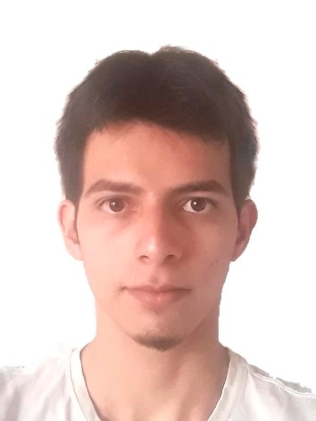
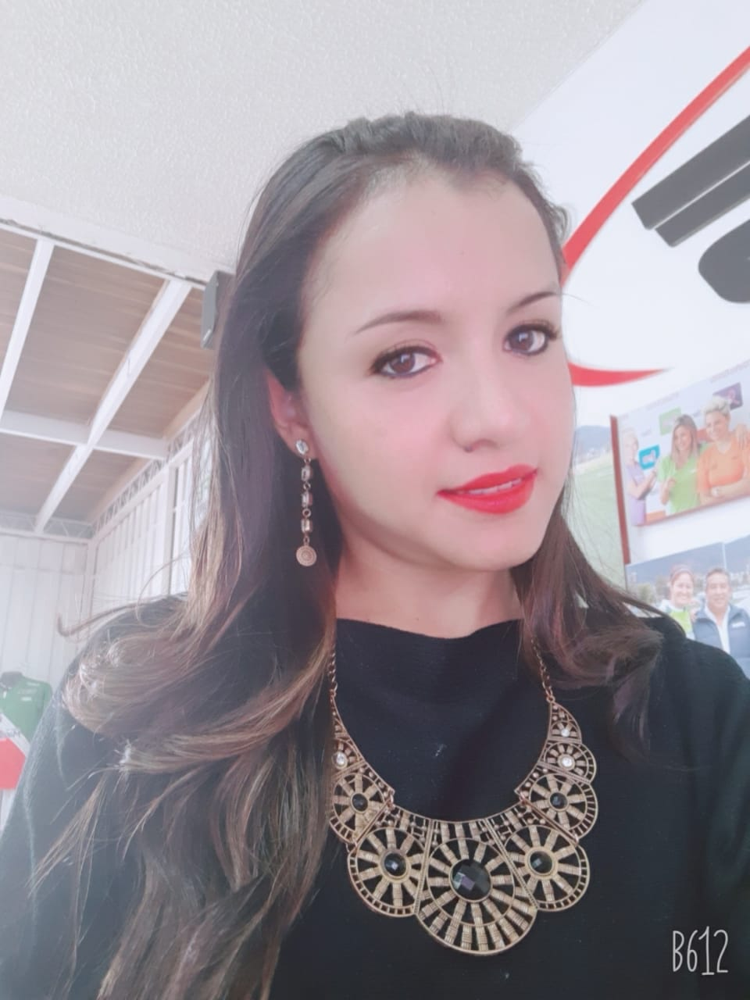
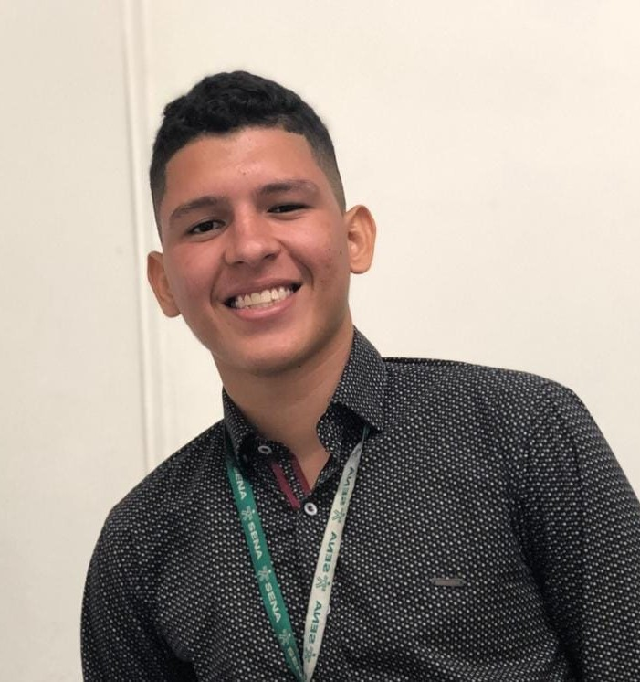
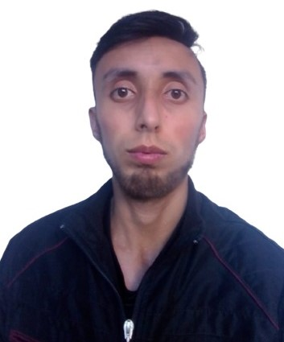

Recive toda la informacion referente al covid-19
Tras la confirmación de varios positivos por covid 19 en la Vuelta a Colombia,
uno de los equipos participantes decidió este jueves abandonar la carrera.
El equipo Sundark Arawak es uno de los implicados en los positivos y ha tomado la decisión de retirarse.
El Ministerio de Salud de Colombia registró en su informe diario sobre coronavirus (COVID-19) 10.023
nuevos contagios lo que se traduce en el quinto día en que aumentan los casos entre la población.
La autoridad de salud colombiana reportó, además, otras 195 muertes, con las que llegó a un total de 36.214
decesos durante la pandemia.
El Ministerio de Salud entregó los resultados preliminares del estudio seroprevalencia de Leticia,
Barranquilla y Medellín. Un análisis que lidera el Instituto Nacional de Salud y que resulta
fundamental para entender cuál es la cifra real de personas afectadas por el virus en Colombia.
El Ministerio de Salud entregó los resultados preliminares del estudio seroprevalencia de Leticia,
Los anuncios sobre las vacunas contra el coronavirus invitan al optimismo, pero acabar con la pandemia
y regresar a la normalidad sigue estando lejos.
Viajar sin restricciones, no usar mascarillas y asistir a eventos masivos son
algunas actividades que tardarán en volver.

Edad: 20 años
Universidad de Nariño
Ingenieria Civil

Edad: 32 años
Universidad UNAD
Tecnología en Desarrollo de Software

Edad: 18 años
Ingeniería en Sistemas 6 semestre
Universidad Areandina Valledupar
Técnico en sistemas y Tecnólogo en Gestión de Redes
Soy empleado me dedico a trabajar en el área de las telecomunicaciones y me gusta aprender otros campos relacionados con la programación e ingeniería

Edad: 28 años
4 semestre Ingenieria de Sistemas
Universidad Distrital
Francisco José de Caldas
Pasatiempos como leer, ir a cine, escuchar música, pasar tiempo con amigos.
Mi motivación es poder certificarme como programador para poder incursionar en
otro campo laboral con mayor demanda.